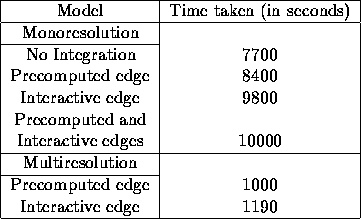

There is a significant improvement in the obtained disparity map when integration
is used compared to when no integration (compare Figure 16 with Figure 18 ,
Figure 20 , Figure 22 , Figure 24 , Figure 26 , and compare
Figure 28 with Figure 30 , Figure 32 , Figure 34 , Figure 36 , Figure 38 respectively).
Based on the simulations for the random dot stereogram we see that the
accuracy of the disparity map is better when we use the multiresolution framework
(Sections 7.2.1, 7.2.2). Nevertheless, for the case of auto part
and the Pentagon, much better results are obtained using the interactive line
field computation model (Section 7.1.3) or the multiresolution interactive
line field computation model (Section 7.2.2) (see Figure 32 , Figure 38 or
Figure 44 , Figure 50 ).
The interactive edge computation model seems to
work better when compared with the precomputed edge model
(compare Figure 31 with Figure 29 , and compare Figure 43 with Figure 41 ).
The multiresolution interactive edge computation model is computationally less expensive
(see Table 3).
One sees that for the simulations, the multiresolution approach is faster by a
factor of 8.
When
both precomputed line fields and interactively computed line fields are used
one sees that
the results are better than those for the case of only precomputed line fields
(Section 7.1.2), but worse than those for only interactive line field computation
(Section 7.1.3). Compare Figure 33 with Figure 29 and Figure 31 .
The reason for this could be that the precomputed line fields are dominating the
integration process; i.e. the model is driven more by the precomputed line fields
and less by the interactively computed line fields.
Based on the simulations, one sees that the multiresolution interactive edge
computation integration model (Section 7.2.2) gives the best results in
terms of computation time and accuracy of the disparity map.

Table 3: Computational time to get final results